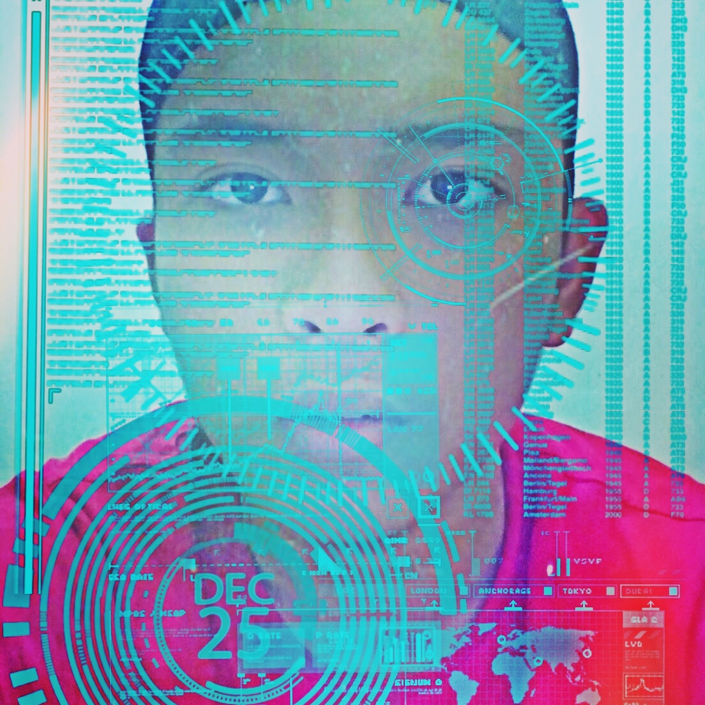

Name:Shadiq bin Khadzri
Birthdate:24/1/2000
Nickname:Shad
Hobby:Playing Dota 2
Ambition:not determined yet
my experience:
When i was 12 years old, i supposed to be the sportsman in my primary school,
but due to lack just one gold medal,i lost to my junior who 1 year younger than me.
But im not sad because at that time, i was known as the most fastest sprinter in my school.
When i went to secondary school, my glorious time as sprinter was crashed due to my leg injuries.
It became permanent, then i decided to changed my athelete profession.I turn to be a handball player.
I was known in my secondary school because of my older brother used to study there, he used to be a very
great handball player,so my friends and seniors were expecting that i will be just like my brother.Unfortunately
i cant, because my brother were too far greater player than me.I only study there for three years before i moved to new school.
Home